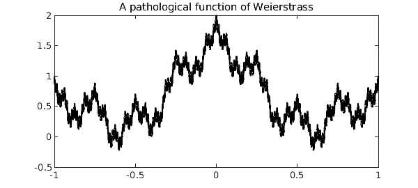
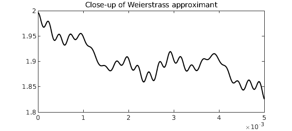

format compact
In the late nineteenth century, Karl Weierstrass rocked the analysis community when he constructed an example of a function that is everywhere continuous but nowhere differentiable. His now eponymous function, also one of the first appearances of fractal geometry, is defined as the sum $$ \sum_{k=0}^{\infty} a^k \cos(b^k \pi x), $$ where $0 < a < 1$ and $b$ is a positive odd integer with $ab < 1 + \frac32 \pi$. Since its publication, Weierstrass's work has been generalized in many directions.
Chebfun is designed for work with functions with a bit of smoothness, but in this example we will see how Chebfun fares against a pathological function lying on the edge of discontinuity.
Let us consider the Weierstrass-type function $$ F(x) = \sum_{k=0}^{\infty} 2^{-k} \cos\left( \frac{\pi}{2} 4^k x \right) $$ on the interval $[-1, 1]$. With its default parameter settings, Chebfun resolves the first eight iterates to machine precision, but not the ninth.
f_k = @(k) @(x) 2^-k * cos(pi/2*x*4^k);
F{1} = chebfun(f_k(0));
for k = 1:8,
F{k+1} = F{k} + chebfun(f_k(k));
end
Here is what the unresolved ninth iterate looks like.
plot(F{9}, 'k')
title('A pathological function of Weierstrass')

We must zoom in 400 times to see that Chebfun is in fact plotting a smooth function.
plot(F{9}, 'k', 'interval', [0 0.005])
title('Close-up of Weierstrass approximant')

The function $F(x)$ is not differentiable, but it is integrable. For this particular Weierstrass function, the exact value of the integral can be found easily. We begin with
$$ \int_{-1}^{1} F(x)\mathrm{d}x = \int_{-1}^{1} \sum_{k=0}^{\infty} f_k(x) \mathrm{d}x = \int_{-1}^{1} \sum_{k=0}^{\infty} 2^{-k} \cos\left( \frac{\pi}{2}4^k x \right) \mathrm{d}x. $$
Because $\int \sum |f_k| < \infty$, we can move the integral inside the sum and evaluate each term as
$$ \sum_{k=0}^{\infty} \int_{-1}^{1} 2^{-k} \cos\left( \frac{\pi}{2}4^k x \right) \mathrm{d}x = \sum_{k=0}^{\infty} \frac{1}{8^k} \frac{4}{\pi} \sin\left( \frac{\pi}{2} 4^k \right). $$
However, $\sin( \frac{\pi}{2} 4^k ) = 0$ for all $k > 0$, so the sum is equal to its first term, $\frac{4}{\pi}$.
Let's check our answer against Chebfun's.
error = sum(F{9}) - 4/pi
error =
1.998401444325282e-15
A more difficult problem is to find the global minimum of $F(x)$ on the interval $[-1, 1]$. Even if it were possible to differentiate $F$ to find where $F'(x) = 0$, we would discover infinitely many local extrema. Of course, Chebfun's representation of $F$ is a polynomial approximant, so we can locate the roots of the derivative for any iterate. As we may expect, performance rapidly gets worse as we take more terms.
tt = []; xx = []; mm = [];
for k = 1:2:7
tic
kk = (k+1)/2;
[mm(kk), xx(kk)] = min(F{k});
tt(kk) = toc;
end
str = [sprintf('%2s %11s %16s %19s\n', 'k', 'x_min', 'F_k(x_min)', 'computation time') ...
repmat('-',1,52) sprintf('\n') ...
sprintf('%2d %12.7f %+15.7f %11.2f sec\n', [(2:2:8); xx; mm; tt])];
disp(str)
k x_min F_k(x_min) computation time ---------------------------------------------------- 2 -1.0000000 +0.0000000 0.02 sec 4 -0.6196232 -0.0504416 0.02 sec 6 -0.6010220 -0.1761766 0.03 sec 8 0.6000610 -0.2098447 0.41 sec
Chebfun is slowly converging to the actual solution given by $F_{min} = \sin(\frac{\pi}{5}) - \cos(\frac{\pi}{5}) = -0.2212317420...$ at the points $x = \pm \frac35$. Chebfun's difficulty is not with accurately locating the minima: the x_min iterates are geometrically converging to the correct solution as they should. The problem is that the iterates' global minima so slowly converge to the global minimum of $F$ while Chebfun must deal with polynomials of geometrically increasing degree.
References
-
K. Weierstrass, Abhandlungen aus der Functionenlehre. J. Springer, 1886.
-
G. H. Hardy, "Weierstrass's non-differentiable function." Transactions of the American Mathematical Society, 17, no. 3 (1916), 301-325.
-
L. N. Trefethen, Approximation Theory and Approximation Practice, Extended Edition, SIAM, 2019._